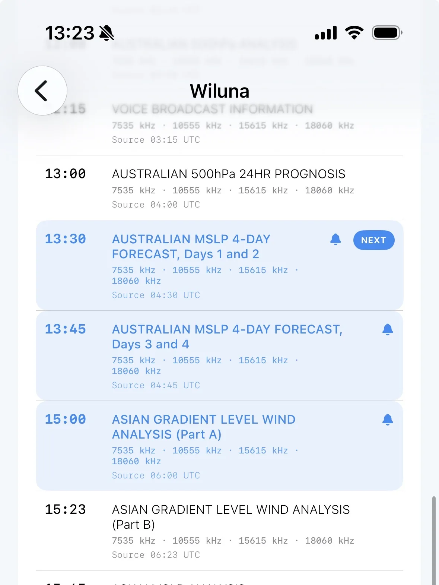
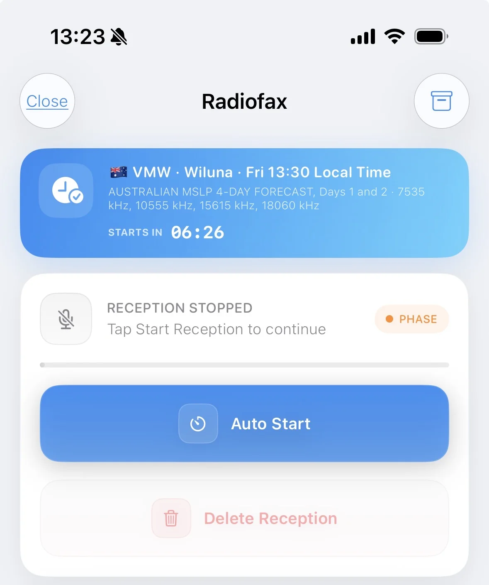
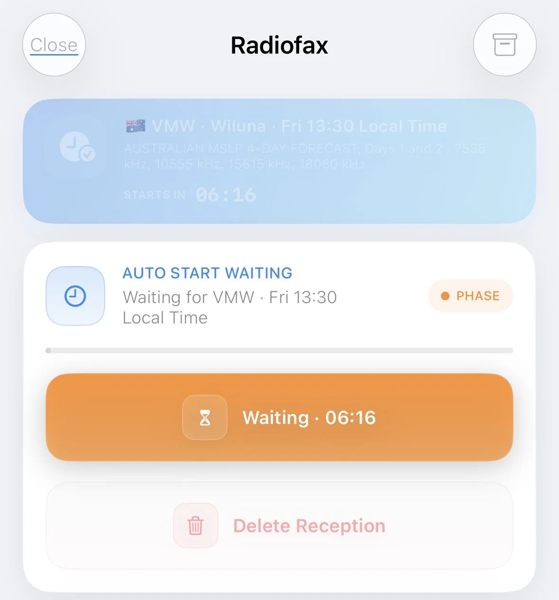

Choose
Select a broadcast
Open Worldwide Weatherfax Schedules, choose a station, and tap a broadcast. A blue highlight and bell confirm it is active; SWAtlas alerts you 3 minutes before.
Find a station, enable its schedule, and prepare reception without watching the clock.

Open Worldwide Weatherfax Schedules, choose a station, and tap a broadcast. A blue highlight and bell confirm it is active; SWAtlas alerts you 3 minutes before.

When the next enabled broadcast is within 10 minutes, its details and countdown appear on Radiofax. Tap Auto Start before the final 10-second window.

SWAtlas stays awake while waiting and begins reception 10 seconds early. If broadcasts share a start time, the station higher in your country order takes priority.